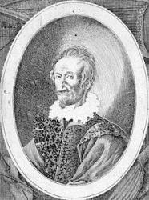

|
|
409美妙時光 |
|
1 O gladsome Light, O Grace 2 Now, as day fadeth quite, 3 To Thee of right belongs |
|
|
https://hymnary.org/hymn/GG2013/page/840 O Gladsome Light
|
|
|
|
|


409美妙時光 https://youtu.be/L7s8vbV8Agk - O Gladsome Light (Nunc dimitis)
https://youtu.be/sVkd1l9RWcY
| Text: | O Gladsome Light |
| Paraphraser: | Robert Seymour Bridges |
| Tune: | LE CANTIQUE DE SIMÉON |
| Harmonizer: | Claude Goudimel |
| Short Name: | Robert Bridges |
| Full Name: | Bridges, Robert, 1844-1930 |
| Birth Year: | 1844 |
| Death Year: | 1930 |
Robert S. Bridges (b. Walmer, Kent, England, 1844; d. Boar's Hill, Abingdon, Berkshire, England, 1930) In a modern listing of important poets Bridges' name is often omitted, but in his generation he was considered a great poet and fine scholar. He studied medicine and practiced as a physician until 1881, when he moved to the village of Yattendon. He had already written some poetry, but after 1881 his literary career became a full-time occupation, and in 1913 he was awarded the position of poet laureate in England. Bridges published The Yattendon Hymnal (1899), a collection of one hundred hymns (forty-four written or translated by him with settings mainly from the Genevan psalter, arranged for unaccompanied singing. In addition to volumes of poetry, Bridges also published A Practical Discourse on Some Principles of Hymn-Singing (1899) and About Hymns (1911).
Bert Polman
===================
Bridges, Robert Seymour, M.A., son of J. J. Bridges, of
Walmer, Kent, was b. Oct. 23, 1844, and educated at Eton and at Corpus
Christi College, Oxford (B.A. 1867, M.A. 1874). He took his M.A. in 1874,
but retired from practice in 1882, and now (1906) resides at Yattendon,
Berks. He is the author of many poems and plays. He edition and contributed
to the Yattendon Hymnal, 1899 (originally printed at
the Oxford Univ. Press in parts—Nos. 1-25, 1895; 26-50, 1897; 51-75, 1898;
76-100, 1899). [Rev. James Mearns, M.A.]
--John Julian, Dictionary of Hymnology, New Supplement (1907)
| Scripture: | ; ; ; ; ; ; |
Tune Information
| Title: | NUNC DIMITTIS (Bourgeois) |
| Composer: | Louis Bourgeois (1551) |
| Harmonizer: | Claude Goudimel (1551) |
| Meter: | 6.6.7.6.6.7 |
| Incipit: | 56543 24312 21155 |
| Key: | F Major |
| Source: | Pseaulmes cinquante de David, 1547;Genevan Cantique de Simeon |
| Copyright: | Public Domain |
| Short Name: | Louis Bourgeois |
| Full Name: | Bourgeois, Louis, 1510-1561 |
| Birth Year: | 1510 |
| Death Year: | 1561 |
Louis Bourgeois (b. Paris, France, c. 1510; d. Paris, 1561). In both his early and later years Bourgeois wrote French songs to entertain the rich, but in the history of church music he is known especially for his contribution to the Genevan Psalter. Apparently moving to Geneva in 1541, the same year John Calvin returned to Geneva from Strasbourg, Bourgeois served as cantor and master of the choristers at both St. Pierre and St. Gervais, which is to say he was music director there under the pastoral leadership of Calvin. Bourgeois used the choristers to teach the new psalm tunes to the congregation.
The extent of Bourgeois's involvement in the Genevan Psalter is a matter of scholarly debate. Calvin had published several partial psalters, including one in Strasbourg in 1539 and another in Geneva in 1542, with melodies by unknown composers. In 1551 another French psalter appeared in Geneva, Eighty-three Psalms of David, with texts by Marot and de Beze, and with most of the melodies by Bourgeois, who supplied thirty four original tunes and thirty-six revisions of older tunes. This edition was republished repeatedly, and later Bourgeois's tunes were incorporated into the complete Genevan Psalter (1562). However, his revision of some older tunes was not uniformly appreciated by those who were familiar with the original versions; he was actually imprisoned overnight for some of his musical arrangements but freed after Calvin's intervention. In addition to his contribution to the 1551 Psalter, Bourgeois produced a four-part harmonization of fifty psalms, published in Lyons (1547, enlarged 1554), and wrote a textbook on singing and sight-reading, La Droit Chemin de Musique (1550). He left Geneva in 1552 and lived in Lyons and Paris for the remainder of his life.
| Short Name: | Claude Goudimel |
| Full Name: | Goudimel, Claude, 1514-1572 |
| Birth Year (est.): | 1514 |
| Death Year: | 1572 |
The music of Claude Goudimel (b. Besançon, France, c. 1505; d. Lyons, France, 1572)

was first published in Paris, and by 1551 he was composing harmonizations for some Genevan psalm tunes-initially for use by both Roman Catholics and Protestants. He became a Calvinist in 1557 while living in the Huguenot community in Metz. When the complete Genevan Psalter with its unison melodies was published in 1562, Goudimel began to compose various polyphonic settings of all the Genevan tunes. He actually composed three complete harmonizations of the Genevan Psalter, usually with the tune in the tenor part: simple hymn-style settings (1564), slightly more complicated harmonizations (1565), and quite elaborate, motet-like settings (1565-1566). The various Goudimel settings became popular throughout Calvinist Europe, both for domestic singing and later for use as organ harmonizations in church. Goudimel was one of the victims of the St. Bartholomew's Day massacre of Huguenots, which occurred throughout France.
Bert Polman
Notes
Louis Bourgeois (PHH 3) composed NUNC DIMITTIS for the Song of Simeon; the tune was first published in the 1547 edition of the Genevan Psalter. Claude Goudimel (PHH 6) wrote the harmonization in 1564 with the melody originally in the tenor voice. Some Christian denominations associate this tune with the ancient Greek "Candlelight Hymn," which begins with the words "O gladsome Light, O grace" in the translation by Matthew Bridges (PHH 410).
O Gladsome Light, O Grace
Hymn Story/Background
Author Information
Composer Information
Scripture References
- · · · · · · · · · · ·
Confessions and Statements of Faith References
Further Reflections on Confessions and Statements of Faith References
The spirit of this song can come only from those who thankfully receive each day as a gift from God’s hand. Our World Belongs to God, paragraph 44 teaches, “Life is a gift from God’s hand” which we receive thankfully “with reverence for the Creator...” (paragraph 44).
The call for God’s help in our daily living arises from those who are
confident of his fatherly care; consider reading Belgic Confession, Article
13 and Heidelberg Catechism, Lord’s Day 9, Question and Answer 26.
Phos Hilaron

https://en.wikipedia.org/wiki/Phos_Hilaron
希拉隆（Phos Hilaron）
希拉隆（Phos Hilaron） (古希腊: ΦῶςἹλαρόν, 罗马化: 伊拉斯·弗洛斯（FόsIlarόn））是古老的 基督教赞美诗 最初写成
Koine希腊文。常被其引用 拉丁 标题 鲁门·希拉雷（Lumen Hilare），它已被翻译成 英语 作为 O
Gladsome光。这是最早的基督教赞美诗记录在外面 圣经 今天仍在使用。赞美诗是 vespers 在里面 拜占庭礼，并且还包含在一些现代 英国国教徒 和
路德会 礼仪。
内容
1 起源
2 现代用法
2.1 东正教
2.2 在亚美尼亚礼仪的晚宴中
2.3 英国国教
2.4 路德教
3 歌词
3.1 希腊语
3.2 拉丁
3.3 亚美尼亚古典
3.4 格鲁吉亚人
3.5 斯拉夫尼克教堂
3.5.1 斯拉夫老教堂
3.5.2 俄罗斯教会斯拉夫语
3.6 英语
3.6.1 东正教
3.6.1.1 俄罗斯以外的俄罗斯东正教教堂
3.6.1.2 美国东正教教堂
3.6.1.3 另一种东正教翻译
3.6.1.4 另一种东正教翻译
3.6.2 拜占庭天主教
3.6.2.1 鲁塞尼亚天主教堂
3.6.2.2 梅尔基特天主教堂
3.6.3 杂物
3.6.3.1 威廉·斯托里
3.6.3.2 约翰·凯布尔（John Keble）
3.6.3.3 罗伯特·布里奇斯（Robert Bridges）
3.6.3.4 1979年美国共同祈祷书
3.6.3.5 路德教会
3.6.3.6 主教教堂使用的替代版本
3.7 匈牙利
3.7.1 匈牙利希腊天主教会
3.8 韩国人
3.8.1 韩国东正教教堂
3.8.2 韩国国教教堂
3.9 葡萄牙语
3.9.1 路西塔尼亚教堂（Anglican Communion）
3.10 威尔士语
3.11 阿拉伯
3.12 抛光
3.13 罗马尼亚东正教
4 音乐设置
4.1 带有在线笔记或音频
4.2 其他
4.3 商业录音
5 笔记
6 外部链接
7 参考
起源
赞美诗最初是由一位不知名的作者录制的。 使徒宪法,[1] 这是在3世纪末或4世纪初编写的。在早晨，傍晚，饭前和烛光下唱的歌曲集中可以找到它。 希拉隆（Phos
Hilaron） 是在晚上的灯光下演唱的，因此有时被称为“灯光赞美诗。尽管其他三首歌中有一些是来自圣经，或者在某种情况下可以追溯到150左右， 希拉隆（Phos
Hilaron）
是第一个被认为是现代意义上的实际赞美诗。当然，这是第一个完整的示例。它比其他节奏更具节奏感，分为十二首经文，每节分别在五个，六个，八个，九个，十个和十一个音节之间变化。英石。
罗勒大帝 （329-379）谈到 希拉隆（Phos Hilaron）
作为教会的一种珍贵传统，赞美诗在他的时代已经被认为是古老的（尽管有些赞美诗归功于圣巴西尔本人）。希腊东正教在原始文本中使用的原始旋律被认为是对声音的加重，因为它跨越了几乎两个八度音程，并且声音在“天堂”和“父亲”两个单词上达到峰值（请参见
文字绘画).
当时，在耶路撒冷的空墓中，一盏灯永久地燃烧着。 基督，它的光芒象征着生命之光
耶稣。当基督徒聚集起来敬拜赞美诗时，在被称为灯饰的传统中，从灯饰上点燃了烛光，从坟墓中燃起了蜡烛，其明亮而孤独的火焰呼唤教会庆祝立森主。
圣雅典，一位日期不详的圣人，但圣日是7月16日，一些人（包括圣巴索尔）认为，这首赞美诗是在mar难的路上撰写的。他经常被描绘成一个年长的主教，the子手的手臂瘫痪，直到圣徒完成他的歌。这
罗马教学 状态： ”在 蓬图斯，圣雅典娜（Saint
Athenogenes）的生日，他是位年迈的神学家，当他要用火烧死他的道时，他唱了一首欢乐的赞美诗，他以书面形式写给了门徒。“他可能与在十个门徒mar难中的主教一样。
塞巴斯特, 亚美尼亚，在7月16日皇帝统治期间 戴克里先， 最可能 约。 公元305年
圣索菲罗尼乌斯 的 耶路撒冷 （560-638）以诗歌闻名，他被认为修改了赞美诗，而东正教的礼仪书籍通常将他确定为作者，例如，在《圣经》中 斯拉夫文字如下.
现代用法
东正教
赞美诗是 正统 vespers 每天唱歌或朗诵的服务 入口 庆祝伟大的vespers，并且在所有情况下，在“灯饰诗篇”之后，又名“上帝，我哭了……”及其
ich属 并紧接在 蛋白质.
在亚美尼亚礼仪的晚宴中
亚美尼亚人在赞美诗中唱过这首赞美诗（亚美尼亚文： 埃雷科因·扎姆（Erekoyin Zham）），但仅适用于周六晚上的周日和某些盛宴前夕的vespers。亚美尼亚文字的名称是
罗伊兹瓦特（Loys Zvart）。它的旋律是旋律，通常是由合唱团成员演唱的。这首赞美诗为周六晚上演唱的周日晚祷者介绍了一个简短的顺序。在将标准引入所有vespers服务之后
亚美尼亚礼仪。按照此顺序是 梅吉迪 周日的赞美诗，包含了当天的主题，周日的赞美诗是基督复活的主题；这种meghedi在功能上大致相当于 残废
拜占庭的vespers。
英国国教
赞美诗由 约翰·基布尔，其中一位领导人 牛津运动 之内 英国国教，在1834年。基布尔（Keble）的版本设置为八种声音 国歌 经过 查尔斯·伍德
在1912年。另一种翻译是19世纪的美国诗人 亨利·沃兹沃思·朗费罗;第三次翻译，由 罗伯特·布里奇斯，出现在几首赞美诗中，由 路易·布尔乔亚.
传统的英国国教服务 晚祷 并未要求使用赞美诗，尽管在提供歌唱赞美诗或歌颂赞美诗的服务中，可能会演唱这些经文。最近，一些英国国教团体在晚上将其采用
礼仪。例如，1979年的美国人 共同祈祷书 在下面给出的散文翻译中将其规定为可选 启发性的 紧接在当天指定的诗篇前的颂歌。
路德教
《路德教会服务手册》（2006年，密苏里州议会会议）载有Phos Hilaron供傍晚祈祷之用。祈祷书建议唱歌Phos Hilaron之前先点一支蜡烛。
歌词
希腊语
原文
ΦῶςἱλαρὸνἁγίαςδόξηςἀθανάτουΠατρός，
οὐρανίου，ἁγίου，μάκαρος，ἸησοῦΧριστέ，
ἐλθόντεςἐπὶτὴνἡλίουδύσιν，ἰδόντεςφῶςἑσπερινόν，
ὑμνοῦεενΠατέρα，Υἱόν，καὶἅγιονΠνεῦμα，Θεόν。
Ἄξιόνσεἐνπᾶσικαιροῖςὑμνεῖσθαιφωναῖςαἰσίαις，
ΘΘεοῦ，ζωὴνὁδιδούς·διὸὁκόσμοςσὲδοξάζει。
音译（改写） 古典希腊语 发音与所写时间段的发音相反）
Phôshilarònhagíasdóxēs，athanátouPatrós，
Ouraníou，hagíou，mákaros，IēsoûChristé，
elthóntesepìtḕnhēlíoudýsin，idóntesphôshesperinón，
hymnoûmenPatéra，Hyión，kaìHágionPneûma，Theón。
Áxiónse enpâsikairoîshymneîsthaiphōnaîsaisíais，
HyièTheoû，zoḕnhodidoús，diòhokósmossèdoxázei。
逐字翻译
哦，不朽之父圣洁荣耀的光明喜悦，
耶稣基督啊，天上的，圣洁的，有福的，
在落日的映衬下，看到了傍晚的曙光，
我们赞美父，子和圣灵：上帝。
值得在任何时候都用快乐的声音赞美你，
上帝的儿子，生命的赐予者，世界为你荣耀。
拉丁
Lumen hilare iucunda lux tugloriæ，喜欢luminis de lumine，击败了Iesucælitus和Patre
sancto prodiens。 Fulgor diei lucidus solisque lumen occidit，et nos ad horam
vesperam te confitemur cantico。 Trinitatis gloria中的Laumadas unicum Deum，Patrem
potentem，Filium cum Spiritu Paraclito。 O digne linguis qui piis lauderis omni
tempore，Fili Dei，tesæculavitædatorem person。阿们
另一个拉丁文字表示法，更确切地说，如下所示：
Lumen hilare sanctae gloriae immortalis Patris，Coelestis，sancti，beati，Iesu
Christe，Perumerimus，Lumen cernentes verspertinum，Laudamus Patrem等dator。繁荣的世界。
亚美尼亚古典
亚美尼亚古典文字，取材于 扎哈吉克（Zhamagirk） 亚美尼亚小时手册（Ժամագիրք）是：
ԱլէլուիաԱլէլուիաԱլէլուիաՀաւրՀաւրՀաւրՀաւրՀաւրՀաւրՀաւրՀաւրՀաւրՀաւրՀաւրՀաւրՀաւրՀաւր。
ՔՐԻՍՏՈՍՔՐԻՍՏՈՍՔՐԻՍՏՈՍՔՐԻՍՏՈՍՔՐԻՍՏՈՍՔՐԻՍՏՈՍՔՐԻՍՏՈՍՔՐԻՍՏՈՍՔՐԻՍՏՈՍՔՐԻՍՏՈՍՔՐԻՍՏՈՍՔՐԻՍՏՈՍՔՐԻՍՏՈՍՔՐԻՍՏՈՍՔՐԻՍՏՈՍՔՐԻՍՏՈՍՔՐԻՍՏՈՍՔՐԻՍՏՈՍՔՐԻՍՏՈՍՔՐԻՍՏՈՍՔՐԻՍՏՈՍՔՐԻՍՏՈՍՔՐԻՍՏՈՍՔՐԻՍՏՈՍՔՐԻՍՏՈՍՔՐԻՍՏՈՍՔՐԻՍՏՈՍՔՐԻՍՏՈՍՔՐԻՍՏՈՍՔՐԻՍՏՈՍՔՐԻՍՏՈՍՔՐԻՍՏՈՍՔՐԻՍՏՈՍՔՐԻՍՏՈՍՔՐԻՍՏՈՍՔՐԻՍՏՈՍՔՐԻՍՏՈՍՔՐԻՍՏՈՍՔՐԻՍՏՈՍՔՐԻՍՏՈՍՔՐԻՍՏՈՍՔՐԻՍՏՈՍՔՐԻՍՏՈՍՔՐԻՍՏՈՍՔՐԻՍՏՈՍՔՐԻՍՏՈՍՔՐԻՍՏՈՍժամՔՐԻՍՏՈՍժամՔՐԻՍՏՈՍժամժամժամժամժամժամժամժամժամժամժամժամժամժամ。
ԵրրորդութեանդԵրրորդութեանդԵրրորդութեանդԵրրորդութեանդԵրրորդութեանդԵրրորդութեանդփառաւորէփառաւորէփառաւորէփառաւորէփառաւորէփառաւորէ：
考虑到现代亚美尼亚语的发音，近似音译为：
AlēlouiaAlēlouia。 Louys zvart'sourbp'aṟats'anmahi hayr yerknawori srbo kenarari
Hisous K'ristos。 Yekyalk的《我的世界》（I mtanelaregakanɘntesak）ɘzlouysyerekoyin。
Orhnemk'ɘzhayryev zordi yevɘzsourbhogi astoutso。 Yev amenek'yan asemk'amîn。
Arzhanavoryaɘzmezhamenayn zham orhnel dzayniv yergov
zanounp'aṟats'amenasourberrordout'yanɘd。 Vor taɘzkendanout'younvasnoro yev
ashkharhɘzk'ezp'aṟavorē。
该文本的英文翻译是：
Alleluia，Alleluia。永生的，天上的，圣洁的，充满活力的父亲的荣耀的欢乐，圣洁的光：耶稣基督。来到太阳下山后，我们已经看到了傍晚的曙光。让我们赞美天父，圣子和上帝的圣灵，让我们一起说“阿们”。让我们永远值得拥有一个声音，一首歌来祝福我们，这是赋予生命的全圣三位一体的荣耀的名字，世界为之荣耀。
格鲁吉亚人
ზეცათასა。 ქრისტე。
მამასამამასამამასამამასამამასამამასაღმერთსაღმერთსაღმერთსაღმერთსაღმერთსაღმერთსაღმერთსაღმერთსა。
ღირსმცახარმომცემელომომცემელომომცემელომომცემელომომცემელომომცემელოგადიდებსგადიდებს。
Natelo Mkhiarulo，ts.midisa didebisa ukvdavisa Mamisa zetsatasa。 Ts'midisa
netarisao Ieso Kriste。 Mosrulni dasvlasa mzizasa mkhilvelni natlisa
samts'ukhroisa vakebt Mamasa，da Dzesa da Ts'midasa Sulsa Ghmertsa。
Ghirsmtsa-khar qʼovelsa zhamsa galobad申达khmita t'k'bilita Dzeo Ghmrtisao
tskhovrebis momtsemelo，romlisatvisaca q'oveli sopheli shen gadidebs。
斯拉夫尼克教堂
斯拉夫老教堂
свѣтетихꙑисвѧтꙑѧславꙑбеꙁсъмрьтнаегоотьца
небесьнаегосвѧтаегоблаженнаегоіисꙋсехристе
пришедъшенаꙁападъслъньцавидѣвъшесвѣтъвечерьнꙑи
поемъотьцасꙑнаисвѧтаегодꙋхабога
достоинъесивовьсѧвременапѣтъбꙑтигласꙑпреподобьнꙑми
сꙑнебожииживотъдаѧитѣмъжемирътѧславитъ
俄罗斯教会斯拉夫语
相同文字的图片。
Творе́нїе сѡфро́нїа патрїа́рха і҆ерусали́мскагѡ。
Свелеттисхїйсвѧты́ѧ сла́вы，безсме́ртнагѡ ѻ҆тца̀
небеснагѡ，свѧта́гѡ блаже́ннагѡ，і҆исусехристѐ：
прише́дшеназа́падъ со́лнца，ви́дѣвше свѣ́тъ вече́рнїй，
поемъѻ҆тца̀，сына，и҆свѧта́гѡдуха，бога。
досто́инъє҆сѝвоврѧ̑времена̀ пѣ́тъ бы́ти гла́сыпреподобными，
сынебожїй，живо́тъ даѧ́й：тѣ́мже мі́ръ тѧ̀ сла́витъ。
第一行（红色）翻译为“耶路撒冷先祖索菲罗尼乌斯的著作”。
音译为现代俄语字母：СветеТихийсвятыяславы，безсмертнагоОтцанебеснаго，святагоблаженнаго，ИисусеХристе：пришедшеназападсолнца，видевшесветвечерний，поемОтца，Сына，иСвятагоДуха，Бога。
Достоинесивовременапетбытигласыпреподобными，СынеБожий，животдаяй：темжетслав。
英语
东正教
俄罗斯以外的俄罗斯东正教教堂
耶稣基督啊，那不朽的，天上的，圣洁的，蒙福的父圣洁的荣耀的柔和光，耶稣基督：来到太阳下山，看见了黄昏的光，我们赞美父，子，圣灵：上帝。上帝的儿子啊，生命的赐予者，要时刻满足你，使你时刻被虔诚的声音赞美。因此，世界会荣耀你。[2]
美国东正教教堂
哦，不朽之父圣洁荣耀的光辉，天上的，圣洁的，有福的耶稣基督！既然我们来到了太阳下山，看到了傍晚的曙光，我们就赞美上帝父，儿子和圣灵。为了见面，任何时候都必须以赞美的声音来敬拜你。上帝的儿子和生命的赐予者啊，因此全世界都荣耀你。
另一种东正教翻译
耶稣基督啊，圣荣耀的光辉/不朽之父，天上的圣灵，有福了。
来到日落/看到傍晚的光芒之后，我们赞美父，子和圣灵：上帝。
上帝的儿子啊，你是生命的赐予者，时刻都在向你赞美/用适当的声音赞美。因此，世界会荣耀你。
另一种东正教翻译
耶稣基督啊，那不朽的，神圣的，有福气的父亲圣洁荣耀的欢乐之光。来到太阳下山，看到傍晚的光线，我们赞美父子，圣灵，上帝。生命的赐予者上帝的儿子啊，时刻都应以崇高的声音赞美您，因此全世界都会赞美您。
拜占庭天主教
鲁塞尼亚天主教堂
耶稣基督啊，不朽之父神圣荣耀的欢乐之光，天上的圣洁，有福的人，现在我们已经到达了太阳的落日，看到傍晚的光芒，我们向上帝唱歌，父，子，和圣灵（+）。上帝的儿子，生命的赐予者，随时随地向您高歌一首赞美的歌是很合适的。因此，宇宙为您荣耀。[3]
梅尔基特天主教堂
哦，不朽之父圣洁荣耀的快乐之光。自从我们来到天上，神圣，有福的耶稣基督之前，来到太阳的下山，并且看到了傍晚的曙光，我们赞美上帝：父，子，圣灵（+）。随时都可以通过赞美的旋律来称赞您。哦，上帝的儿子，生命的赐予者，因此世界荣耀你。
杂物
威廉·斯托里
在死者办公室和晚祷中使用。
O辐射光，O太阳神圣
父神永生的面孔，
崇高的O图片
那填满了沉重的住所。
上帝的儿子啊，生命之源，
赞美是您白天和黑夜应得的。
我们快乐的嘴唇必须加重压力
您尊敬而出色的名字。
主耶稣基督，随着日光渐渐消逝，
当黄昏的光芒照耀着，
我们用儿子赞美父亲，
圣灵破裂，与他们一起破裂。
[楼层没有保留古老的文本顺序，在该文本中，第2节而不是第3节中出现了毒理学。]
约翰·凯布尔（John Keble）
冰雹，欢喜的光，倾倒了他纯洁的荣耀
谁是永生的父，天上最聪明，
圣洁至圣，我们的主耶稣基督！
现在我们到了太阳下休息的时间。
我们周围的傍晚的光芒照耀着；
我们赞美圣父，圣子和圣灵！
一直以来最糟糕的艺术是你
用纯洁的舌头
我们上帝的儿子，生命的赐予者，独自一人：
因此，在全世界，您的荣耀，他们拥有。 [注1]
罗伯特·布里奇斯（Robert Bridges）
欢乐的光啊，恩典
父神的面容，
永�琲漸�辉穿着；
神圣，神圣，神圣
我们的救主耶稣基督，
你的快乐出现。
现在，白天褪色了，
我们看到傍晚的光线，
我们赞美的赞美诗倾泻；
威武之父，
你，他的化身儿子，
和圣灵崇拜。
属于你的权利
所有赞美圣歌，
上帝的儿子啊，赐予生命；
因此，至高者O，
世界荣耀了，
并将永远高举。
1979年美国共同祈祷书
1985年加拿大的英国国教教堂也使用过《替代服务手册》
哦，客气的光，
天上永生父的纯净光明，
耶稣基督啊，圣洁，有福了！
现在，当我们来到太阳下山的时候，
我们的目光注视着起泡酒，
上帝啊，我们唱您的赞美：父亲，儿子和圣灵。
您随时都值得被快乐的声音赞美，
上帝的儿子，生命的赐予者，
并在世界各地得到荣耀。
路德教会
不朽之父荣耀的欢乐之光，
天上，圣洁，蒙福的耶稣基督，
我们来到了太阳的下山
我们期待着傍晚的光线。
我们向上帝，圣父，圣子和圣灵唱歌。
您值得永远被纯洁的声音赞美。
上帝的儿子，生命的赐予者，
宇宙宣告你的荣耀。
主教教堂使用的替代版本
优雅与美丽的世界之光，
上帝永�畯惜晡�镜子，
爱的自由义务的透明火焰，
您将救赎带入我们的种族。
现在，当我们看到傍晚的灯光时，
我们赞美赞美诗中的声音；
值得您无尽的祝福，
我们夜晚的太阳，我们日子的灯。[4]
匈牙利
匈牙利希腊天主教会
Enyhevilágossága，
圣安德鲁斯·勃艮第
éshalhatatlan
Mennyei Atya istenidicsőségének，
耶祖斯·克里斯托（JézusKrisztus）！
Eljövéna Napnaklenyugvásához
éslátvánaz estelifényt;
áldjukazAtyát
一个Fiút，一个SzentlélekIstent！
Mert teméltóvagy，
hogy mindenidőben，
szent hangonénekeljünk戏弄，
伊斯坦·菲亚
kiéltetadszvilágnak;
miért是ezvilágdicsőíttéged。[5]
韩国人
韩国东正教教堂
아버의의의의한한신도시여도시여도시여도시여도시여도시여며며며며며며며며다다다다다다다다다다다다다다다 도시여리스도시여，그러므로모든다이다。
韩国国教教堂
은혜로운이여，하늘에이여，여다。 도여리스도여！해이때에，우리는보바라，주님께이다。하느님，성부이성령！주님은언제나언기에，생명을기에 ，세상으로세상으영광。
葡萄牙语
路西塔尼亚教堂（Anglican Communion）
Avé，Alegre Luz，Puro esplendor
da gloriosa面对父亲，
阿韦（Avé），耶稣，本尼托·萨尔瓦多（bendito Salvador），
基督山
没有视线，
Brilham da Noite饰演cintilantes：
奥派，菲尔霍，埃斯皮里图德阿莫尔
cantemos nossos hinos狂喜。
De santas赢得冠军
prestada a Ti，耶稣，Filho de Deus。
Inteira，cantaglóriaacriação，
o universo，一个土地，一个新的社区。
威尔士语
大卫·刘易斯（ap Ceredigion）1870–1948年的翻译
O lewyrch wyneb和tragwyddol爸爸，
Fendigaid Fab o'r nef，
克里斯特·伊苏（Crist Iesu），梅·格维里奥内德（Me gwirionedd）
Yn eglur ynddo ef。
Yn awr machluda’r haul yn gylch odân，
Daw’rsêro un i un；
Duw – y Tad，y Mab a’s YsbrydGlân–
Glodforwn yngytûn。
Tydi sydd deilwng o glodforedd gwiw，
Yn wastad，Arglwydd mawr，
Ty fo no d ein moliant，O Fab Duw，
Drwy gyrrau代尔·劳尔（Drear gyrrau daear Lawr）。
阿拉伯
أيهاالنورُ البهيّ，نورُ المجدِ المقدّس
مجدِ الآبِالذيلايموت
السّماويِّ القدّوسِالمغبوط
يايسوعُالمسيح
َقدبلغناغروبَالشمس
ونظرنانورَالمساء
نسبّحُ اللهَ الآبَوالابنوالروحَالقدس
إنّه يحقُّفيكلِّالأوقات
أنتُسبَّحَبأصواتبارّة
ياابنَ اللهِ，يامُعطيَالحياة
لذلك，العالمُ إيّاكَ يمجّد
抛光
PogodnaświatłościOjcaświętejchwały，
NieśmiertelnegoPananiebiosówi ziemi，
Jezu Chryste。 Podzachóddzieńnamdobiegłcały，
我gwiazdęjużwieczornąoczami naszymi
Oglądamyw niebie，ku czci Twojej，Boże，
Ojcze，Synu，i Duchuświętości，śpiewamy，
Bośgodzien开玩笑，o Panie，作者：okażdejporze，
GłoszonoTwojąchwałęzbożnymipieśniami，
O wielki SynuBoży，Tyśycia szafarzem，
Przeto Ciświatpieśńchwały
wdzięcznieskładaw darze。
罗马尼亚东正教
Luminălinăa Sfintei Slave aTatăluiCeresc，Celuifărăde moarte，
Sfântului，Fericitului，Iisuse Hristoase，
Venind la apusul soarelui，văzândlumina cea deseară，lăudămpeTatăl，pe
FiulşipeSfântulDuh，Dumnezeu
Vredniceştiîntoatăvremea a filăudatde glasuri cuvioase，Fiul lui Dumnezeu，pentru
aceasta，lumea Teslăveşte。
音乐设置
带有在线笔记或音频
传统或作曲家 语 带有音乐符号的文字 声音的 评论
拜占庭圣歌 英语 PDF –西方符号； 2声部（旋律和ison） （PDF），已检索 2011-12-14 MP3 – 2个部分（旋律和ison），已检索
2011-12-14
MIDI –非人声，已检索 2011-12-14 音调胸膜1
拜占庭圣歌 英语 PDF –拜占庭新星 （PDF），存档自 原本的 （PDF） 于2012-04-06，已检索 2011-12-14 MIDI –非人声，已检索
2011-12-14 音调2改编自约翰·萨凯拉里德斯（John Sakellarides）在圣山上高喊的版本
拜占庭圣歌 英语 PDF –拜占庭新星 （PDF），存档自 原本的 （PDF） 于2012-04-06，已检索 2011-12-14 MIDI –非人声，已检索
2011-12-14 Socrates Papadopoulos缩写的“ Ancient Melody”的音调2改编自Socrates Papadopoulos
喀尔巴阡俄罗斯颂歌 英语 PDF – 4部分和声 （PDF），存档自 原本的 （PDF） 于2012-04-26，已检索 2011-12-14
喀尔巴阡俄罗斯颂歌 英语 PDF – 2部分 （PDF），已检索 2011-12-14 MP3 – 2个声部，已检索 2011-12-14
MIDI –非人声，已检索 2011-12-14 由神父安排。劳伦斯·马吉蒂奇（旧版本）
喀尔巴阡俄罗斯颂歌 英语 PDF – 2部分 （PDF），已检索 2011-12-14 由神父安排。劳伦斯·马吉蒂奇（新版）
瓦拉姆·尚特（Valaam Chant） 英语 PDF – 2部分 （PDF），已检索 2011-12-14 MP3 – 2个声部，已检索 2011-12-14
MIDI –非人声，已检索 2011-12-14
Znamenny Chant 英语 PDF –包括用于Altos的高音谱号的第二部分 （PDF），已检索 2011-12-14 MP3 –人声，已检索
2011-12-14
MIDI –非人声，已检索 2011-12-14 音调5 –基于Znamenny Chant的“ Tikhonovsky Chant”
Znamenny Chant 英语 PDF – 2部分 （PDF），已检索 2011-12-14 MIDI –非人声，已检索 2011-12-14 音调7
–大赞纳尼颂歌–难度大
亚历山大·科比洛夫（Alexander Kopylov） (1854–1911) 斯拉夫 PDF – 4部分和声–用旧正字法俄文字书写 （PDF），已检索
2011-12-14 MIDI –非人声，已检索 2011-12-14 指定“不是很慢”
德沃列茨基 英语 PDF – 4部分和声 （PDF），存档自 原本的 （PDF） 于2012-04-26，已检索 2011-12-14
查尔斯·伍德（1866–1926） 英语 PDF和HTML –无伴奏–声音数量：8vv，已检索 2012-01-04 MID，SIB
–无伴奏–声音数量：8vv，已检索 2012-01-04
合唱维基 –归因于Keble的歌词–提供了乐谱。（1792-1866年），从早期的基督教赞美诗Φωςιλαρον译而来。
古兹 法语 PDF – 4部分和声 （PDF），已检索 2012-12-31
其他
罗伯特·布里奇斯（Robert Bridges）的《欢乐的光，恩典》， Le Cantique deSiméon（Nunc Dimittis）
圣加布里埃尔 经过 F. A. G. Ouseley爵士牧师 (1825–1889)
基督教堂 经过 E. S. Medley牧师 (1838-19--)
Свѣтетихій (Svyetye tikhiy）。 52， 全夜守夜， 经过 彼得·伊里奇·柴可夫斯基 (1840–1893)
塞巴斯特 经过 约翰·史丹纳爵士 (1840–1901)
晚上赞美诗 经过 亚瑟·沙利文爵士 (1842–1900)
Свѣтетихій (Svyetye tikhiy） 23 No.3由 亚历山大·格雷琴尼诺夫（Alexander Gretchaninoff）
(1864–1956)
国歌 经过 查尔斯·伍德 (1866–1926)
Свѣтетихій (Svyetye tikhiy）。 37， 全夜守夜， 经过 谢尔盖·拉赫玛尼诺夫（Sergei Rachmaninoff）
(1873–1943)
国歌 经过 杰弗里·肖 (1879–1943)
作品28 经过 克雷格·塞拉（Craig Sellar Lang） (1891–1972)
希拉隆（Phos Hilaron） 经过 亚历山大·洪水 (1977-)[6]
教堂音乐 – 大卫·克劳德乐队, 2009
亲切的光 经过 梅森·谢法（Mason Shefa）, 2012.
商业录音
朗的Op.28的乐谱
听克雷格·塞拉尔（Craig Sellar Lang）版本
听约翰·鲁特（John Rutter）指挥查尔斯·伍德（Charles Wood）的作曲
听克里斯·汤姆林（Chris Tomlin）的版本
[1]
笔记
^ 引用自 圣公会赞美诗集 编号54（教堂书房出版社-1965年），大写字母与原始字母相同。
外部链接
维基资源 具有与本文相关的原始文本：
希拉隆（Phos Hilaron）
天主教百科全书–赞美诗篇
将赞美诗归功于罗勒，并提及圣索菲罗尼乌斯（St Sophronius）的修订本
不列颠百科全书 –声称它的历史可以追溯到公元200年或更早。百科全书 site:wikizhzh.top
https://wikizhzh.top/wiki/Phos_Hilaron